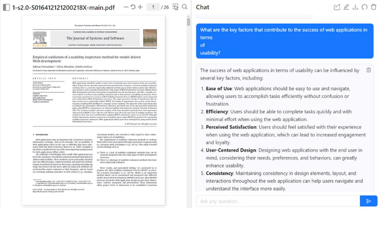
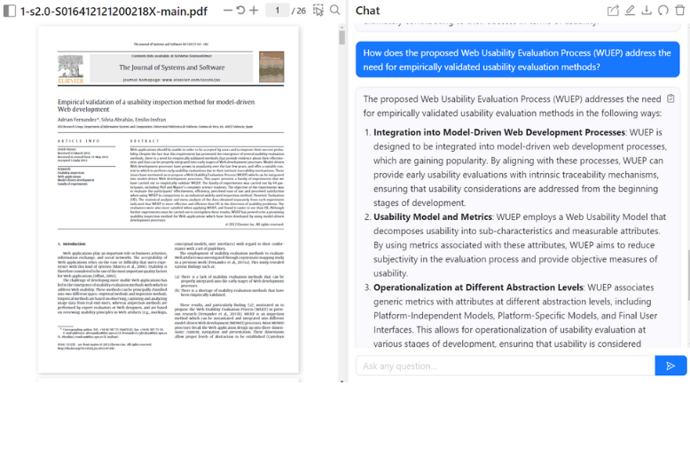
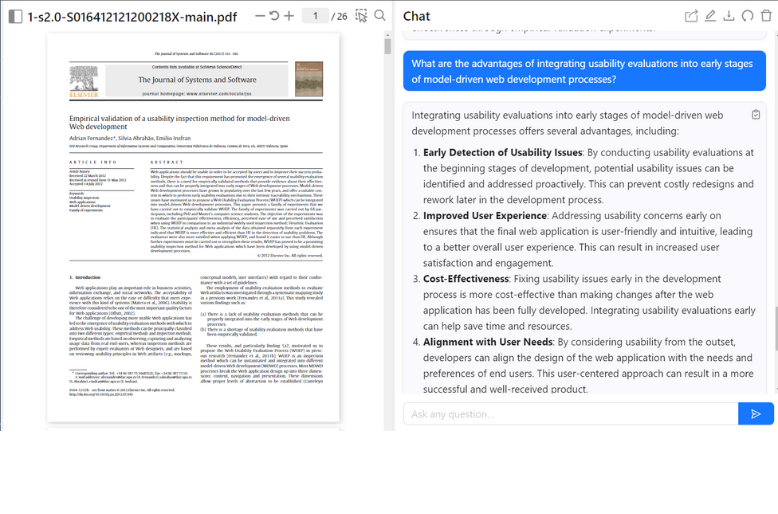
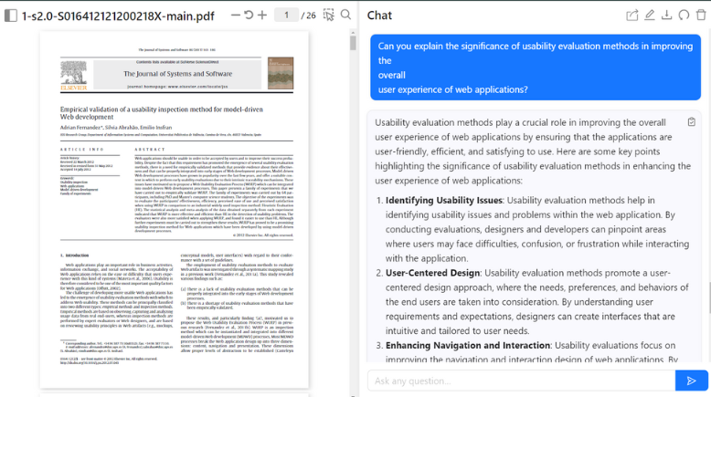
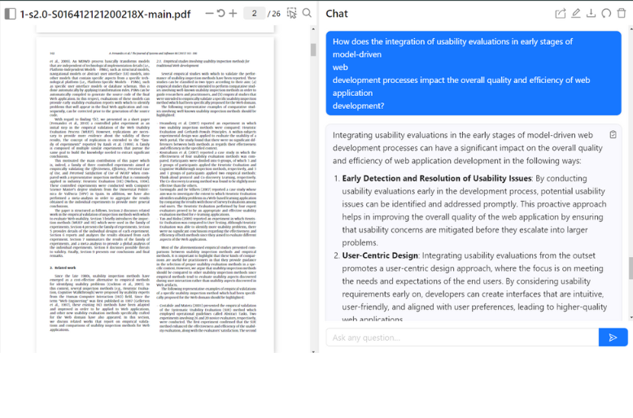

Pregunta 1.
What are the key factors that contribute to the success of web applications in terms of usability?
Respuesta:
The success of web applications in terms of usability can be influenced by several key factors,
including:
- Ease of Use: Web applications should be easy to use and navigate, allowing users to accomplish tasks efficiently without confusion or frustration.
- Efficiency: Users should be able to complete tasks quickly and with minimal effort when using the web application.
- Perceived Satisfaction: Users should feel satisfied with their experience when using the web application, which can lead to increased engagement and loyalty.
- User-Centered Design: Designing web applications with the end user in mind, considering their needs, preferences, and behaviors, can greatly enhance usability.
- Consistency: Maintaining consistency in design elements, layout, and interactions throughout the web application can help users navigate and understand the interface more easily.
- Feedback and Error Handling: Providing clear feedback to users about their actions and how to correct errors can improve the overall user experience.
- Accessibility: Ensuring that the web application is accessible to users with disabilities or different devices can expand the reach and usability of the application.
- Performance: Web applications should load quickly and respond promptly to user interactions to prevent frustration and abandonment.
By focusing on these key factors, web developers and designers can create web applications that are user-friendly, efficient, and satisfying to use, ultimately contributing to their success in terms of usability.
Pregunta 2.
How does the proposed Web Usability Evaluation Process (WUEP) address the need for empirically validated usability evaluation methods?
The proposed Web Usability Evaluation Process (WUEP) addresses the need for empirically validated usability evaluation methods in the following ways:
- Integration into Model-Driven Web Development Processes: WUEP is designed to be integrated into model-driven web development processes, which are gaining popularity. By aligning with these processes, WUEP can provide early usability evaluations with intrinsic traceability mechanisms, ensuring that usability considerations are addressed from the beginning stages of development.
- Usability Model and Metrics: WUEP employs a Web Usability Model that decomposes usability into sub-characteristics and measurable attributes. By using metrics associated with these attributes, WUEP aims to reduce subjectivity in the evaluation process and provide objective measures of usability.
- Operationalization at Different Abstraction Levels: WUEP associates generic metrics with attributes at different abstraction levels, including Platform-Independent Models, Platform-Specific Models, and Final User Interfaces. This allows for operationalization of usability evaluation at various stages of development, ensuring that usability is considered throughout the design process.
- Focus on End-User Usability: WUEP emphasizes detecting problems related to the usability for end-users rather than focusing solely on the usability of model-driven artifacts. By inspecting models and considering traceability among them, WUEP aims to identify usability issues early in the development process and provide recommendations for improvement.
- Comparison with Heuristic Evaluation (HE): The family of experiments conducted to evaluate WUEP compared its effectiveness, efficiency, ease of use, and satisfaction with HE, an industrial widely used inspection method. The results of these experiments demonstrated the feasibility and effectiveness of WUEP in detecting usability problems, providing empirical validation of the proposed method.
Overall, WUEP addresses the need for empirically validated usability evaluation methods by offering a structured approach that integrates usability evaluations into model-driven web development processes, employs objective metrics, focuses on end-user usability, and demonstrates its effectiveness through empirical validation experiments.
Pregunta 3.
What are the advantages of integrating usability evaluations into early stages of model-driven web development processes?
- Early Detection of Usability Issues: By conducting usability evaluations at the beginning stages of development, potential usability issues can be identified and addressed proactively. This can prevent costly redesigns and rework later in the development process.
- Improved User Experience: Addressing usability concerns early on ensures that the final web application is user-friendly and intuitive, leading to a better overall user experience. This can result in increased user satisfaction and engagement.
- Cost-Effectiveness: Fixing usability issues early in the development process is more cost-effective than making changes after the web application has been fully developed. Integrating usability evaluations early can help save time and resources.
- Alignment with User Needs: By considering usability from the outset, developers can align the design of the web application with the needs and preferences of end users. This user-centered approach can result in a more successful and well-received product.
- Enhanced Collaboration: Integrating usability evaluations early encourages collaboration between designers, developers, and usability experts. This interdisciplinary approach can lead to a more holistic understanding of usability requirements and foster innovation in design.
- Traceability and Accountability: Model-driven development processes provide traceability mechanisms that link design artifacts to requirements. By integrating usability evaluations early, developers can track and document usability decisions, ensuring accountability and transparency in the design process.
- Iterative Improvement: Early usability evaluations allow for iterative improvement of the web application based on user feedback and testing results. This iterative approach can lead to continuous enhancement of usability throughout the development lifecycle.
In summary, integrating usability evaluations into early stages of model-driven web development processes can result in a more user-centric, cost-effective, and successful web application that meets the needs and expectations of its users.
Pregunta 4.
Can you explain the significance of usability evaluation methods in improving the overall user experience of web applications?
Significance of Usability Evaluation Methods in Enhancing User Experience of Web Applications
- Identifying Usability Issues: Usability evaluation methods help in identifying usability issues and problems within the web application. By conducting evaluations, designers and developers can pinpoint areas where users may face difficulties, confusion, or frustration while interacting with the application.
- User-Centered Design: Usability evaluation methods promote a user-centered design approach, where the needs, preferences, and behaviors of the end users are taken into consideration. By understanding user requirements and expectations, designers can create interfaces that are intuitive and tailored to user needs.
- Enhancing Navigation and Interaction: Usability evaluations focus on improving the navigation and interaction design of web applications. By ensuring that users can easily navigate through the application, find information, and perform tasks efficiently, usability evaluations contribute to a smoother and more intuitive user experience.
- Increasing Efficiency and Productivity: Usability evaluations aim to streamline the user interface and interactions, making it easier for users to accomplish tasks quickly and effectively. A well-designed and user-friendly interface can enhance user productivity and efficiency, leading to a more positive overall experience.
- Boosting User Satisfaction: Usability evaluation methods help in creating interfaces that are visually appealing, easy to use, and engaging for users. A positive user experience, where users can achieve their goals with minimal effort and frustration, can lead to increased user satisfaction and loyalty towards the web application.
- Reducing Errors and Confusion: Usability evaluations help in identifying and addressing potential sources of errors, confusion, or misunderstandings in the interface. By improving the clarity of information, feedback mechanisms, and error handling, usability evaluations contribute to a more error-free and seamless user experience.
- Iterative Improvement: Usability evaluations support an iterative design process, where feedback from users is collected and incorporated into the design to continuously improve the user experience. By iteratively evaluating and refining the interface, designers can ensure that the web application evolves to meet user needs and expectations.
In summary, usability evaluation methods play a vital role in enhancing the overall user experience of web applications by identifying usability issues, promoting user-centered design, improving navigation and interaction, increasing efficiency and productivity, boosting user satisfaction, reducing errors and confusion, and supporting iterative improvement based on user feedback.
Pregunta 5.
How does the integration of usability evaluations in early stages of model-driven web development processes impact the overall quality and efficiency of web application development?
Impact of Integrating Usability Evaluations in Early Stages of Model-Driven Web Development Processes
- Early Detection and Resolution of Usability Issues: By conducting usability evaluations early in the development process, potential usability issues can be identified and addressed promptly. This proactive approach helps in improving the overall quality of the web application by ensuring that usability concerns are mitigated before they escalate into larger problems.
- User-Centric Design: Integrating usability evaluations from the outset promotes a user-centric design approach, where the focus is on meeting the needs and expectations of the end users. By considering usability requirements early on, developers can create interfaces that are intuitive, user-friendly, and aligned with user preferences, leading to higher-quality web applications.
- Cost Savings: Addressing usability issues early in the development process is more cost-effective than making changes later on. By integrating usability evaluations at the beginning stages, developers can avoid costly redesigns and rework that may be required if usability problems are discovered late in the development cycle. This efficiency in addressing usability concerns can lead to cost savings in the long run.
- Improved Collaboration and Communication: Integrating usability evaluations encourages collaboration between designers, developers, usability experts, and stakeholders. This interdisciplinary approach fosters better communication and understanding of usability requirements, leading to more effective decision-making and design solutions that enhance the overall quality of the web application.
- Enhanced User Experience: By focusing on usability early in the development process, developers can create web applications that offer a superior user experience. Usability evaluations help in optimizing navigation, interaction design, and overall usability, resulting in web applications that are more engaging, efficient, and satisfying for users.
- Iterative Refinement: Integrating usability evaluations in early stages allows for iterative refinement of the web application based on user feedback and testing results. This iterative approach enables continuous improvement of usability, leading to a higher-quality end product that meets user needs and expectations.
- Traceability and Documentation: Model-driven development processes provide traceability mechanisms that link design artifacts to requirements. By integrating usability evaluations early, developers can document usability decisions and track changes, ensuring accountability and transparency in the development process, which ultimately contributes to the overall quality of the web application.
In conclusion, integrating usability evaluations in early stages of model-driven web development processes can positively impact the overall quality and efficiency of web application development by facilitating early detection and resolution of usability issues, promoting user-centric design, saving costs, improving collaboration and communication, enhancing user experience, supporting iterative refinement, and ensuring traceability and documentation of usability decisions.
